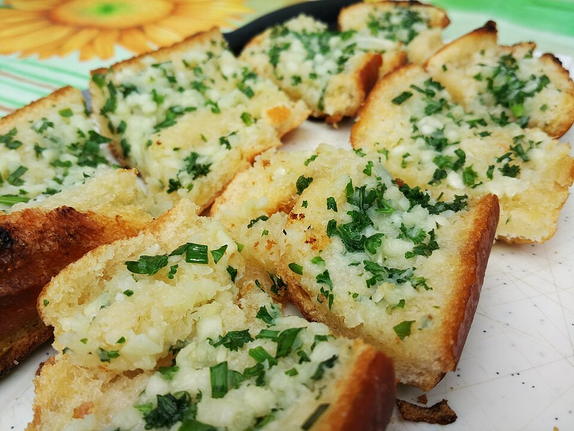

Garlic Bread

Description
Crispy and buttery garlic bread that smells amazing and pairs perfectly with soups or pasta. It’s simple and quick to make.
Ingredients
- 4 slices of bread
- 2 tablespoons butter
- 2 cloves of garlic, minced
- A pinch of salt
- Chopped parsley (optional)
Steps
- Mix butter, garlic, and salt in a small bowl.
- Spread the mixture evenly on the bread slices.
- Toast the bread in a pan or oven until golden brown.
- Sprinkle parsley if desired.
- Serve hot.